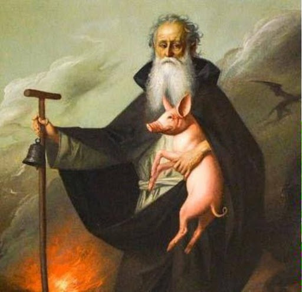

Capostipite della categoria poi edintificata come eremitica, Antonio abate, Santo Egizio cristiano, fu uno dei tanti esempi di aderenza estrema alla fede dei perimi secoli dopo Cristo. Antonio è nato intorno al 250 d.C. a Coma, località situata nel cuore dell'Egitto. La sua infanzia fu caratterizzata dalla perdita dei genitori. All'età di 20 anni circa, intorno al 270 d.C., sotto ispirazione dello Spirito Santo, diede tutti i suoi eni ai poveri, e scelse di vivere isolato dal mondo per poter sviluppare una vita immolata a Cristo. In un primo momento visse nella zona della Tebaide, successivamente però, si trasferì sulle rive del Mar Rosso. Già in vita Antonio era riuscito ad ottenere la stima dei suoi contemporanei, e una leggenda narra che addirittura Costantino e i suoi figli si recassero da lui per chiedere consigli su delle decisioni da prendere. Per due volte si dovette allontanare dalla sua vita eremitica. La prima occasione ci fu sotto l'impero di Dioclezianno. Dato che questi stava perseguitando i Cristiani, Antonio confortò la comunità cristiana di Alessandria d'Egitto. Nel secondo caso invece, l'attacco subito dai fratelli era di una natura interna alla stessa Chiesa. In seguito al Concilio di Nicea (325 d.C.), si svilupparono delle eresie, una delle quali, l'arianesimo, ebbe maggior successo, tanto che in quegli anni essa si poteva ormai definire una vera minaccia per l'incolumità della comunità cristiana. Antonio venne dunque ad aiutare Anastasio (vescovo di Alessandria d'Egitto dal 328 al 373 d.C.), a combattere la dottrina di Ario e a ribadire l'importanza della fedeltà alle decisioni prese durante il Concilio di Nicea. Antonio morì ultracentenario il 17 Gennaio 356. Anche se molti furono i suoi discepoli, il merito di aver tramandato la sua vita è da attribuirsi a quell'Anastasio Vescovo di Alessandria che Antonio stesso aveva aiutato nel combattere l'arianesimo.
Nell'iconografia sant'Antonio è mostrato spesso attorniato da un particolare animale di fattoria: il maiale. Questo perchè il Papa accordò agli Antoniani la possibilità di allevare questi animali a spese della comunità, per curare l'ergotismo, anche chiamato "Male di Sant'Antonio" o "Fuoco di Sant'Antonio". Perciò questi animali potevano gironzolare per le strade e, se muniti dell'apposito campanello di riconoscimento, non venivano infastiditi. Altro elemento presente nelle iconografie di Antonio bate è il bastone a forma di T, la "Tau" nell'alfabeto ebraico. Essendo l'ultima lettera di questo alfabeto essa è un'allusione al destino e alle cose ultime.